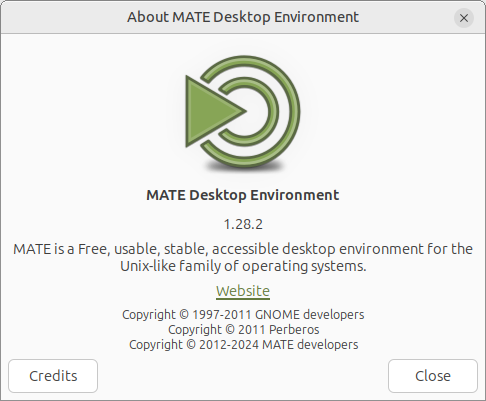

MATE 1.28 released
MATE 1.28 Released
It is release time once again. We worked hard to bring you the best desktop experience possible. A big thank you to all contributors who helped to make this happen.

What’s new in MATE 1.28
We are thrilled to announce the release of MATE Desktop 1.28, which brings a wealth of updates aimed at modernizing the codebase while ensuring stability and robustness. This release focuses on enhancing Wayland support, updating various applications, and fixing numerous bugs.
MATE 1.28 has made significant strides in updating the codebase, including the removal of deprecated libraries and ensuring compatibility with the latest GTK versions. One of the most notable improvements is the enhanced support for Wayland, bringing us closer to a fully native MATE-Wayland experience. Several components have been updated to work seamlessly with Wayland, ensuring a more integrated and responsive desktop environment.
The headline changes in MATE Desktop 1.28 are:
- Atril now uses libarchive for handling comics, supports webkitgtk 4.2.1, and has documented its EPUB support. Deprecated methods have been replaced with modern counterparts to improve performance and stability.
- Caja can now manage desktop icons, render backgrounds, and change backgrounds in Wayland sessions. These improvements enhance the user experience and bring greater functionality to Wayland users.
- Engrampa has introduced support for the Meson build system, switched to using unar for CPIO archives, and now supports unrar-free. These updates improve compatibility and performance.
- The Eye of MATE image viewer now supports the Meson build system and includes fixes for several build warnings, contributing to a more stable and efficient application.
- The window manager Marco has added a new setting to raise windows on the alt+tab popup and replaced various deprecated methods to ensure better performance and user experience.
- Many panel applets now support Wayland, with improvements for in-process building and specific applet functionality under Wayland. Memory leaks have been fixed, and accessibility improvements have been made.
- The control center now works in both Wayland and X11 sessions, supports the Meson build system, and includes several UI and memory leak fixes.
- Pluma has a new Quickhighlight Plugin in the pluma-plugins package.
- MATE Terminal now has Meson build system support. Copying a file from Caja into the terminal now works as expected (it inserts the file path). Additional enhancements include support for OSC 8 hyperlinks and improvements to tab management.
- Translations are updated. Thank you to our team of translators!
The various components of MATE Desktop 1.28 are available for download here:
More details
Here are the gory details.
atril
- For comics, we now use the libarchive library to unpack documents.
- Atril now supports the newest version 4.2.1 of webkitgtk.
- Did you know that Atril can display epub documents? This feature is now documented.
- Replaced various deprecated methods with their modern counterparts.
- Translations update.
Complete changelog at https://github.com/mate-desktop/atril/commits/master/
caja
- Caja can now manage icons on a Wayland desktop, render the background, and change the background (Wayland support is a build option). Launch in Wayland sessions with —force-desktop to show desktop icons.
- Fixed some issues found by cppcheck.
- Translations update.
Complete changelog at https://github.com/mate-desktop/caja/commits/master/
caja-actions
- Fixed some build warnings.
- Fixed a memory leak.
- Translations update.
Complete changelog at https://github.com/mate-desktop/caja-actions/commits/master/
caja-dropbox
- Fixed a build warning.
- Translations update.
Complete changelog at https://github.com/mate-desktop/caja-dropbox/commits/master/
caja-extensions
- Added the audio-video-properties plugin. This 2000+ lines of code change lets you view the exact properties of your media files directly in the file manager.
- For the sendto extension, we now require gupnp version 1.6.
- Some build and deprecation warning fixes.
- Translations update.
Complete changelog at https://github.com/mate-desktop/caja-extensions/commits/master/
engrampa
- Engrampa now supports the Meson build system.
- Uses unar instead of cpio for CPIO archives.
- We now support unrar-free.
- Enhanced the codebase.
- Translations update.
Complete changelog at https://github.com/mate-desktop/engrampa/commits/master/
eom
- Eye of MATE now supports the Meson build system.
- Fixed some build warnings.
- Translations update.
Complete changelog at https://github.com/mate-desktop/eom/commits/master/
libmatekbd
- Fixed some memory leaks.
- Translations update.
Complete changelog at https://github.com/mate-desktop/libmatekbd/commits/master/
libmatemixer
- Translations update.
Complete changelog at https://github.com/mate-desktop/libmatemixer/commits/master/
libmateweather
- Translations update.
Complete changelog at https://github.com/mate-desktop/libmateweather/commits/master/
marco
- We added a setting to raise windows on the alt+tab popup.
- Replaced various deprecated methods with their modern counterparts.
- Some small fixes.
- Translations update.
Complete changelog at https://github.com/mate-desktop/marco/commits/master/
mate-applets
- A lot of Wayland specific commits:
- Most of the panel applets will now function under Wayland if built in-process.
- Building the applets in-process is now supported.
- The exceptions are AccessX, which relies on X11 keyboard and mouse configuration code, and Geyes, which cannot see the pointer when it is outside the panel under Wayland due to how Wayland works.
- Note that the battery applet can be used in Wayland, which is important because mate-power-manager uses a lot of X11 specific code and does not work under Wayland at this time.
- Fixed some memory leaks.
- Accessibility improvements.
- Translations update.
Complete changelog at https://github.com/mate-desktop/mate-applets/commits/master/
mate-backgrounds
- Fixed build warnings.
- Translations update.
Complete changelog at https://github.com/mate-desktop/mate-backgrounds/commits/master/
mate-calc
- Fixed a memory leak.
- Translations update.
Complete changelog at https://github.com/mate-desktop/mate-calc/commits/master/
mate-common
- As stable as always.
Complete changelog at https://github.com/mate-desktop/mate-common/commits/master/
mate-control-center
- Now works in Wayland sessions as well as X11.
- The MATE control center now supports the Meson build system.
- Some memory leak fixes.
- The UI received small improvements.
- Translations update.
Complete changelog at https://github.com/mate-desktop/mate-control-center/commits/master/
mate-desktop
- A few changes were necessary to support background handling under Wayland.
- A new ‘mate_image_menu_item’ function API was added to support image menu items with GTK3.
- Added support for Meson.
- Some dead code was removed.
- Fixed some memory leaks.
- Fixed a lot of analyzer warnings.
- Translations update.
Complete changelog at https://github.com/mate-desktop/mate-desktop/commits/master/
mate-icon-theme
- Translations update.
Complete changelog at https://github.com/mate-desktop/mate-icon-theme/commits/master/
mate-indicator-applet
- Mouse middle-click is now supported.
- Translations update.
Complete changelog at https://github.com/mate-desktop/mate-indicator-applet/commits/master/
mate-media
- Now supports Wayland as a build-time option. Behavior is almost identical in X11 and Wayland.
- Added Meson build system support.
- Translations update.
Complete changelog at https://github.com/mate-desktop/mate-media/commits/master/
mate-menus
- Fixed some build warnings.
- Added Meson build system support.
- Translations update.
Complete changelog at https://github.com/mate-desktop/mate-menus/commits/master/
mate-netbook
- Some maintenance updates.
Complete changelog at https://github.com/mate-desktop/mate-netbook/commits/master/
mate-notification-daemon
- Some improvements on Wayland.
- Only exit on idle when explicitly requested.
- Fixed some memory leaks.
- Translations update.
Complete changelog at https://github.com/mate-desktop/mate-notification-daemon/commits/master/
mate-panel
- New for 1.28 is a working window list under Wayland, and the tray applet can now display indicators under wayland, notably network-manager-applet when it is launched with —indicator. Traditional tray icons not displayed as they use Xembed which is not supported in wayland.
Complete changelog at https://github.com/mate-desktop/mate-panel/commits/master/
mate-polkit
- Now with Meson support.
- Prefer Ayatana AppIndicator when building.
- Fixed a segfault on Wayland.
Complete changelog at https://github.com/mate-desktop/mate-polkit/commits/master/
mate-power-manager
- Now with Meson support.
- Replaced some deprecated functions.
- Some Wayland compatibility changes.
Complete changelog at https://github.com/mate-desktop/mate-power-manager/commits/master/
mate-screensaver
- Fixed a lot of warnings.
- Fixed some memory leaks.
- Added a prompt-driven authentication helper.
Complete changelog at https://github.com/mate-desktop/mate-screensaver/commits/master/
mate-sensors-applet
- The sensors applet can now be used in a Wayland session’s panel as well as under X11 if built in-process (as needed for Wayland).
Complete changelog at https://github.com/mate-desktop/mate-sensors-applet/commits/master/
mate-session-manager
- Fixed some memory leaks.
- Fixed a crash (double-free).
Complete changelog at https://github.com/mate-desktop/mate-session-manager/commits/master/
mate-settings-daemon
- Now uses GDBus instead of dbus-glib.
- Fixed a memory leak.
Complete changelog at https://github.com/mate-desktop/mate-settings-daemon/commits/master/
mate-system-monitor
- Now with Meson support.
- Enabled systemd by default.
- Improved user interface.
- Fixed some user settings not being saved.
Complete changelog at https://github.com/mate-desktop/mate-system-monitor/commits/master/
mate-terminal
- New for 1.28 is a bugfix to allow launching X11 applications in a Wayland session via XWayland.
- Now with Meson support.
- Avoid unprocessed file URIs being pasted to the terminal (file path instead of file URI).
- Tabs: only invoke naming dialog to double-click on tab header.
- Support IDN in mailto scheme in hyperlink tooltips.
- Add support for OSC 8 hyperlinks (HTML-like anchors).
- Feature: Double-click tab to set title.
- Fixed some small bugs.
Complete changelog at https://github.com/mate-desktop/mate-terminal/commits/master/
mate-user-guide
- Fixed some typos.
Complete changelog at https://github.com/mate-desktop/mate-user-guide/commits/master/
mate-user-share
- Translations update.
Complete changelog at https://github.com/mate-desktop/mate-user-share/commits/master/
mate-utils
- The dictionary panel applet can be used in a Wayland session’s panel as well as under X11 if built with Wayland support.
- Replaced deprecated methods.
- Fixed some build warnings.
- Some Wayland fixes.
- Fixed some memory leaks.
Complete changelog at https://github.com/mate-desktop/mate-utils/commits/master/
mate-wayland-session
- An experimental Wayland session for MATE using Wayfire. First release version.
Complete changelog at https://github.com/mate-desktop/mate-wayland-session/commits/master/
mozo
- Some UI improvements.
- Made the collection menu item removable.
Complete changelog at https://github.com/mate-desktop/mozo/commits/master/
pluma
- Fixed some build warnings.
- Fixed some memory leaks.
- Fixed double activation of extensions.
Complete changelog at https://github.com/mate-desktop/pluma/commits/master/
pluma-plugins
- New quickhighlight plugin.
- Fixed some build warnings.
python-caja
- Some code improvements.
Complete changelog at https://github.com/mate-desktop/python-caja/commits/master/